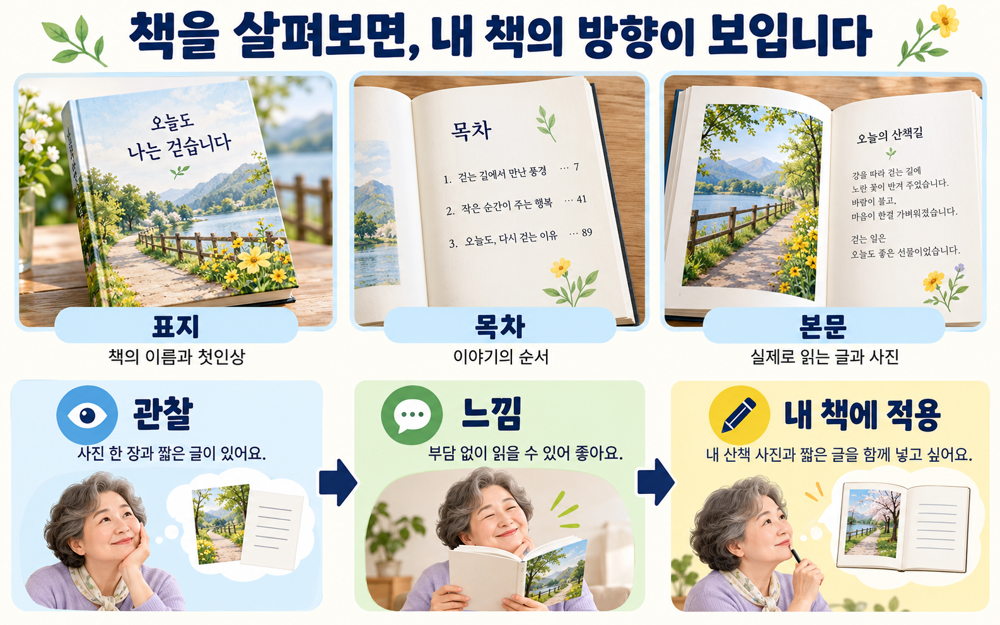
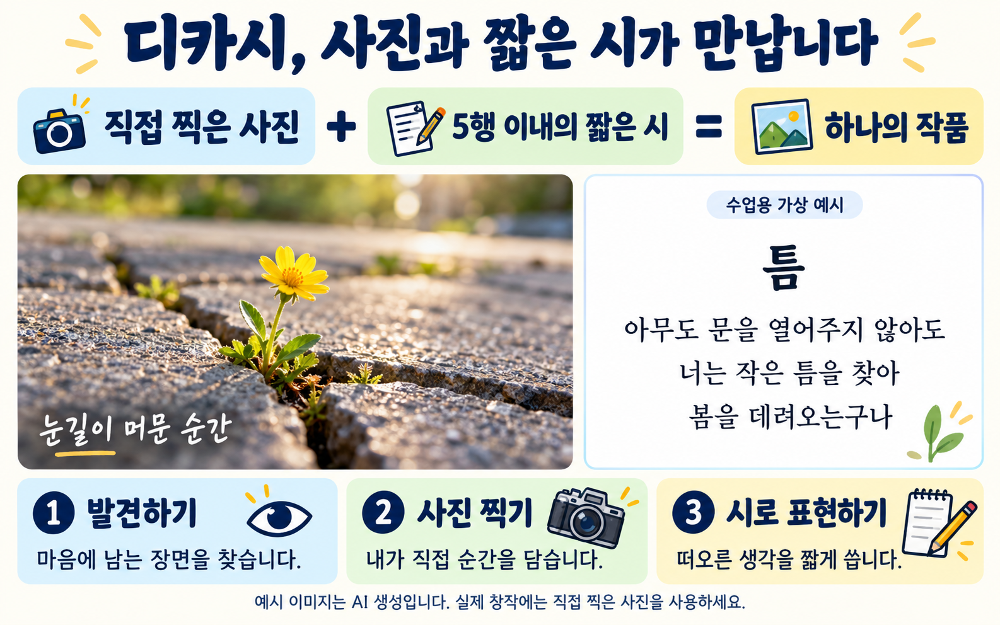
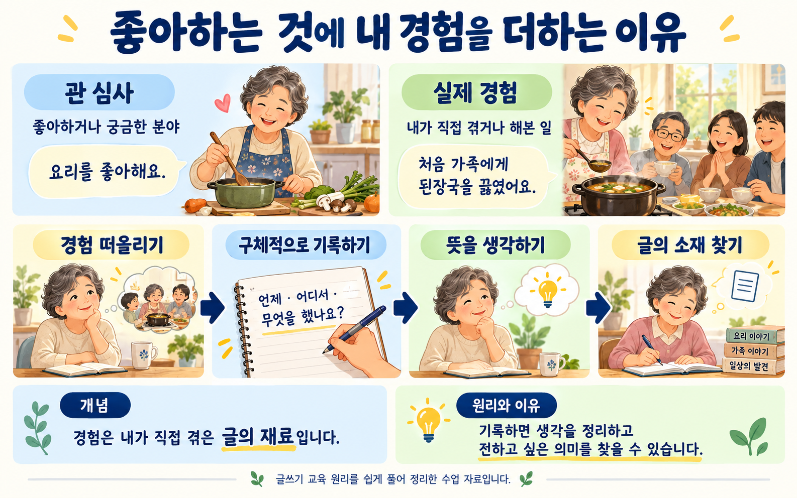
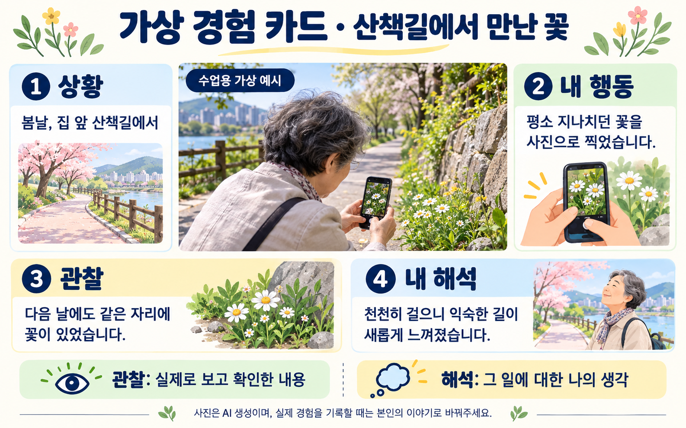
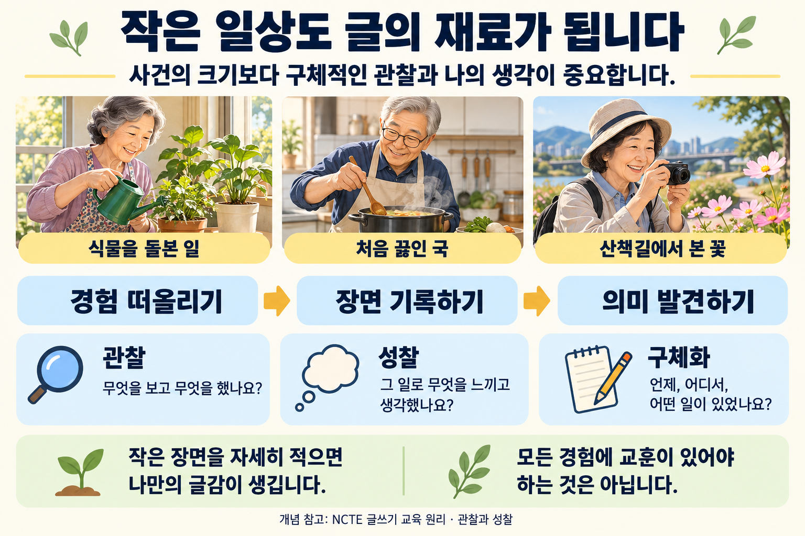
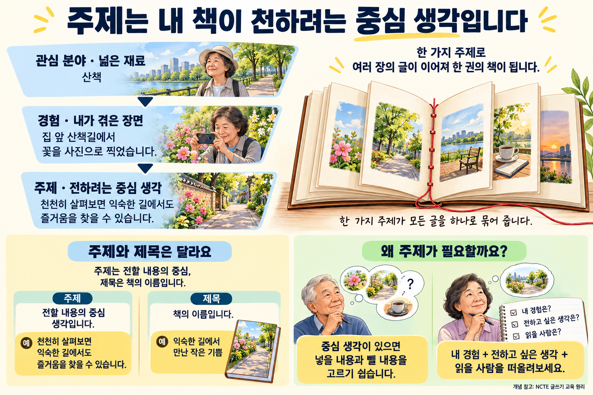
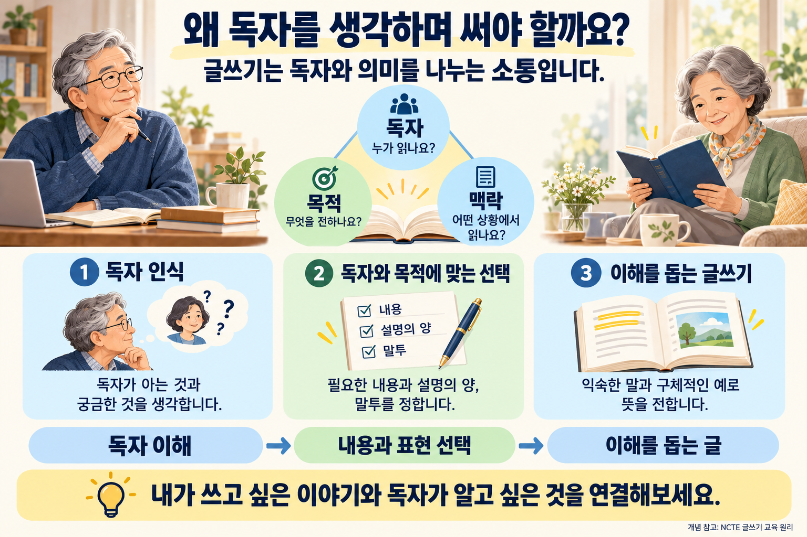
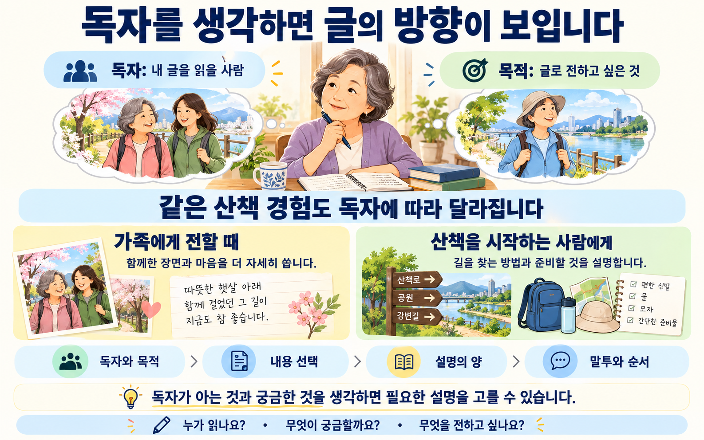

10월 15일 · 2회기
좋아하는 것에서 시작하는
나의 첫 AI 전자책
오늘은 책 한 권의 씨앗을 찾습니다.
내 경험을 이야기하고, 직접 쓸 수 있는 작은 주제를 정합니다.
오늘 배우는 것
책 살펴보기 → AI와 대화하기 → 경험 떠올리기 → 주제 정하기 → 짝에게 이야기하기
오늘 가져갈 것
책 관찰 기록 3개, AI 대화 기록,
실제 경험 3개, 내가 선택한 주제
입력이 어려우면 말로 이야기하거나 종이에 적어도 됩니다.
천천히 차곡차곡 하나씩 해봅니다
| 순서 | 활동 | 시간 |
|---|---|---|
| 1 | 좋아하는 책과 표지 살펴보기 | 30분 |
| 2 | 필요한 웹 접속 · 제미나이와 대화하기 | 35분 |
| 3 | 휴식 | 10분 |
| 4 | 내 경험 3가지 기록하기 | 55분 |
| 5 | AI와 작은 책 주제 정하기 | 70분 |
| 6 | 휴식 | 10분 |
| 7 | 짝 대화·수정·제출 | 30분 |
💡 안내 활동 순서와 시간을 확인하며 하나씩 진행해보세요.
책을 살펴보고, 내 책에 적용합니다

💡 안내 이미지는 수업용 가상 예시입니다. 다음 화면에서 개념과 원리를 정리합니다.
책을 보면, 내 책의 모습이 보입니다
개념 · 세 가지 역할 🖼️
표지: 책의 이름과 첫인상
목차: 이야기의 순서
본문: 실제로 읽는 글과 사진
원리 · 관찰과 느낌을 나누기 🖼️
먼저 눈으로 확인한 특징을 찾고, 그 특징이 왜 마음에 드는지 생각합니다.
활동이 필요한 이유: 내 책의 말투·사진·배치를 선택할 참고 기준을 얻습니다.
수업용 가상 예시 🖼️
관찰: “사진 한 장과 짧은 글이 있어요.”
느낌: “부담 없이 읽을 수 있어 좋아요.”
내 책에 적용: “내 산책 사진과 짧은 글을 함께 넣고 싶어요.”
디카시 · 사진과 짧은 시가 만납니다

💡 안내 사진과 시가 함께 의미를 만드는 표현 방식입니다. 실제 창작에는 본인이 직접 찍은 사진과 직접 쓴 시를 사용합니다.
개념 참고: 한국디카시연구소 · 디카시 형식에 관하여
마음에 드는 책 3권을 살펴보세요
1. 책 기록
2. 책 기록
3. 책 기록
기본 3권을 살펴보세요. 시간이 남으면 버튼을 눌러 4권, 5권 이상도 기록하실 수 있습니다.
💡 안내 책 표지는 관찰 자료로 제출합니다. 내 전자책에 사용할 이미지는 직접 준비하거나 사용 조건을 확인합니다.
🌱 먼저 마치셨다면 · 내 취향을 더 알아보세요 · 5~10분
추가로 자신의 취향을 더 알기 위해 마음에 드는 카테고리와 책을 찾아보세요.
책은 공유 링크를 넣어주시고, 마음에 든 이유를 작성해주세요.
‘책 기록 칸 추가’를 누르면 4권, 5권 이상도 같은 형식으로 기록하실 수 있습니다. 마음에 든 부분은 표지·제목·본문 등으로 적어주세요.
AI는 이야기를 돕는 조력자입니다
개념 · 질문과 초안
프롬프트: AI에게 건네는 질문이나 부탁.
초안: 확인하고 고쳐 쓸 첫 번째 글.
원리 · 마지막 판단은 내가
AI는 그럴듯하지만 틀린 답도 만들 수 있습니다. 내가 겪은 일과 맞는지 직접 확인합니다.
활동이 필요한 이유: 타이핑이 어려워도 음성으로 경험을 말하고, 질문을 받아 소재를 떠올릴 수 있습니다.
필요한 웹 접속
① 아래 서점에서 관심 있는 카테고리와 전자책을 살펴보세요.
② 제미나이를 열고 글이나 화면에 제공되는 음성 입력으로 대화해보세요.
③ 답에서 내 경험과 맞는 내용과 고칠 내용을 찾아보세요.
💡 부크크 안내 서점이 열리면 ‘이주의 책’에서 ‘전자책’을 선택해주세요.
제미나이와 대화하기
제미나이 열기 ↗“좋아하는 것은 산책이에요.”
아래 요청문을 내 말로 바꿔보세요
💡 요청문 사용 안내 [ ] 안의 내용은 자신의 상황에 맞는 단어나 문장으로 바꿔 넣을 수 있습니다. 대괄호 [ ]는 지우고 내용을 넣어주세요.
예: [좋아하는 것] → 산책
바꾼 문장: 내가 좋아하는 것은 산책이야.
나는 첫 전자책을 만드는 초보자야. 내가 좋아하는 것은 [좋아하는 것]이야. 실제로 겪은 일을 떠올릴 수 있도록 쉬운 질문을 한 번에 하나씩 해줘. 내 답을 기다렸다가 다음 질문을 해줘. 내가 말하지 않은 사건·대화·감정은 만들지 마.
AI 질문: “산책하다 기억에 남은 장면이 있나요?”
내 답: “집 앞 길에서 처음 작은 꽃을 발견한 날이요.”
💡 안내 · 확인 AI의 답에 내가 말하지 않은 경험이 들어 있으면 지우거나 고쳐달라고 요청하세요.
🌱 먼저 마치셨다면 · AI에게 한 번 더 물어보세요 · 5분
처음 받은 답에서 너무 넓거나 내 경험과 맞지 않는 부분 한 가지를 골라보세요. “제가 실제로 겪은 범위로 줄여서 질문 하나만 해주세요”라고 요청하고, 달라진 점을 기록해보세요.
잠시 쉬어갑니다
이 휴식 화면에 처음 들어오면 타이머가 시작됩니다.
눈과 손을 쉬고, 스마트폰 충전을 확인하세요.
돌아오면 실제 경험 3가지를 기록합니다.
좋아하는 것에 내 경험을 더합니다

개념 참고: NCTE 글쓰기 원리 — 경험·관찰, 독자·목적·맥락
💡 안내 관심사에 실제 경험을 더하고, 언제·어디서·무엇을 했는지 떠올려보세요.
개념과 원리 정리 · 가상 경험 카드
개념 · 관심사와 경험 🖼️
관심사: 좋아하거나 궁금한 분야.
경험: 내가 실제로 겪거나 해본 일.
“요리를 좋아해요” → 관심사
“처음 가족에게 된장국을 끓였어요” → 경험
원리 · 구체적인 장면부터 🖼️
언제·어디서·무엇을 했는지 적으면 독자에게 전할 글의 재료가 생깁니다.
활동이 필요한 이유: 경험 카드가 다음 차시의 목차와 실제 집필 소재로 이어집니다.
수업용 가상 경험 카드 🖼️
상황: 봄날 집 앞 산책길에서
내 행동: 평소 지나치던 꽃을 사진으로 찍었다.
관찰: 다음 날에도 같은 자리에 꽃이 있었다.
내 해석: 천천히 걸으면 익숙한 길도 새롭게 느껴진다.
가상 경험 카드 · 산책길에서 만난 꽃

💡 안내 · 이해를 돕기 위한 가상 예시입니다. 내 경험을 적을 때는 실제로 겪은 내용을 사용하세요.
작은 일상도 글의 재료가 됩니다

이미지 내용을 글로 읽기
글감은 사건의 크기만으로 정해지지 않습니다. 식물을 돌본 일, 처음 끓인 국, 산책길에서 본 꽃도 자세히 관찰하고 기록하며 생각을 더하면 글의 재료가 됩니다. 관찰은 보고 한 일을, 성찰은 느끼고 생각한 것을 살펴보는 것입니다. 모든 경험에 교훈이 있어야 하는 것은 아닙니다.
거창한 경험이 아니어도 됩니다
산책, 식물 돌보기, 요리, 여행, 가족과의 일상 중 떠오르는 장면을 적어보세요.
막힐 때 참고하세요
🌱 먼저 마치셨다면 · 한 장면을 더 자세히 적어보세요 · 5~10분
세 경험 중 하나를 골라 시간·장소·내 행동·눈으로 본 것을 더 적어보세요. 그때의 생각과 지금 돌아보며 든 생각이 다르면 나누어 적어보세요. 기억나지 않는 내용은 만들지 않습니다.
주제는 내 책이 전하려는 중심 생각입니다

이미지 내용을 글로 읽기
관심 분야는 산책처럼 넓은 재료이고, 경험은 내가 겪은 구체적인 장면입니다. 주제는 그 경험으로 전하려는 중심 생각입니다. 주제와 제목은 다릅니다. 중심 생각은 넣을 내용과 뺄 내용을 고르는 데 도움이 됩니다.
내가 직접 쓸 수 있는 작은 주제
개념 · 주제와 범위 🖼️
주제: 이 책에서 집중해 전할 이야기.
범위: 이번 책에 담을 내용과 제외할 내용.
원리 · 경험이 주제를 뒷받침해야 🖼️
주제와 연결되는 경험이 있고, 몇 편의 글로 정리할 수 있어야 합니다.
활동이 필요한 이유: 너무 넓은 주제를 줄이면 집필 방향을 정하기 쉬워집니다.
넓은 관심사: “건강한 삶”
작은 주제: “집 앞 산책길에서 찾은 소소한 즐거움”
담을 내용: 내가 걸은 길·발견한 장면·느낀 점
제외할 내용: 의학적 효과나 모든 사람에게 맞는 운동법
주제 후보 3개를 비교해봅니다
💡 요청문 사용 안내 [ ] 안의 내용은 자신의 상황에 맞는 단어나 문장으로 바꿔 넣을 수 있습니다. 대괄호 [ ]는 지우고 내용을 넣어주세요.
예: [경험 1 / 경험 2 / 경험 3] → 집 앞 산책길에서 꽃을 찍은 일 / 처음 된장국을 끓인 일 / 화분에 새잎이 난 것을 본 일
예시 대신 자신이 실제로 겪은 경험을 넣어주세요.
내가 실제로 겪은 경험은 다음과 같아. [경험 1 / 경험 2 / 경험 3] 이 경험으로 쓸 수 있는 작은 전자책 주제 3개를 제안해줘. 각 후보를 다음 항목으로 짧게 비교해줘. 1. 주제 한 문장 2. 연결되는 실제 경험 3. 책에 담을 내용과 제외할 내용 정보가 부족하면 질문을 한 번에 하나씩 해줘. 없는 사건·감정·경력·성과는 추가하지 마. 아직 주제를 결정하지 말고 내가 선택할 때까지 기다려줘.
💡 안내 AI에 개인 실명·연락처·타인의 비공개 이야기를 넣지 않습니다. 메모를 익명화하고 필요한 부분만 전달하세요.
🌱 답변을 받은 다음 · 후보를 더 구체적으로 만들어보세요 · 5~10분
① AI가 제안한 세 후보 중 관심이 가는 두 개를 골라주세요.
② 아래 요청문의 [ ]를 바꿔 같은 AI 대화창에 보내주세요.
③ AI의 질문에 실제 경험으로 답하고, 쓰고 싶은 후보 하나를 골라 다음 페이지에 적어주세요.
💡 요청문 사용 안내 [ ] 안은 자신의 후보와 경험으로 바꿔주세요. 대괄호는 지우고 단어나 문장을 넣어주세요.
예: [후보 A] → 산책길에서 찾은 작은 즐거움
[후보 B] → 처음 요리하며 배운 것
[실제 경험] → 집 앞에서 꽃을 찍은 일 / 처음 된장국을 끓인 일
첫 요청문으로 답변을 받은 같은 대화창에 이어서 보내주세요.
방금 제안한 주제 중 [후보 A]와 [후보 B]를 더 살펴보고 싶어. 내가 실제로 겪은 일은 [실제 경험]이야. 먼저 두 후보를 구체화하는 데 필요한 질문을 한 번에 하나씩 해줘. 내 답을 기다린 뒤 다음 질문을 해줘. 질문은 모두 3개 이내로 해줘. 그다음 내가 답한 경험만 바탕으로 두 후보를 다음과 같이 정리해줘. 1. 짧은 전자책에 담을 수 있도록 범위를 줄인 주제 한 문장 2. 내가 직접 쓸 수 있는 구체적인 장면과 더 떠올려볼 장면 3. 책에 담을 내용과 이번에는 제외할 내용 내가 말하지 않은 사건·대화·감정은 만들지 마. 자료가 부족한 부분은 부족하다고 표시해줘. 마지막에 어떤 후보를 쓰고 싶은지 나에게 물어보고, 내가 선택할 때까지 기다려줘.
💡 실습 안내 AI가 정리한 장면 중 실제 경험과 다른 내용은 고쳐주세요. 마음에 드는 주제를 직접 선택하시면 됩니다.
내가 선택한 주제를 적습니다
제목을 멋지게 짓는 일은 다음 차시에 합니다. 오늘은 쓸 내용을 먼저 찾습니다.
🌱 먼저 마치셨다면 · 첫 문단을 써보세요 · 10분
선택한 주제와 연결되는 실제 장면 하나를 3~5문장으로 써보세요. 이어서 이 글을 읽을 사람 한 명과 그 사람이 궁금해할 질문 한 가지를 적어보세요. 제목을 완성하지 않으셔도 됩니다.
잠시 쉬어갑니다
이 휴식 화면에 처음 들어오면 타이머가 시작됩니다.
돌아오면 짝에게 내 경험과 책 주제를 이야기합니다.
왜 독자를 생각하며 써야 할까요?

개념 설명을 글로 읽기
글쓰기는 독자와 의미를 나누는 소통입니다. 독자 인식은 누가 읽을지, 무엇을 알고 무엇을 궁금해할지 생각하는 것입니다. 목적은 글로 전하려는 것이고, 맥락은 글을 읽는 상황입니다.
독자와 목적에 따라 필요한 내용, 설명의 양, 말투를 선택합니다. 익숙한 말과 구체적인 예는 독자가 뜻을 이해하는 데 도움이 됩니다. 내가 쓰고 싶은 이야기와 독자가 알고 싶은 것을 연결해보세요.
독자를 생각하면 글의 방향이 보입니다

개념 참고: NCTE 글쓰기 원리 — 경험·관찰, 독자·목적·맥락
이미지 내용을 글로 읽기
독자는 내 글을 읽을 사람이고, 목적은 글로 전하고 싶은 것입니다. 독자가 이미 아는 것과 궁금해할 것을 생각하면 어떤 내용을 넣고 얼마나 설명할지 정할 수 있습니다. 같은 산책 경험도 가족에게는 함께한 장면과 마음을, 산책을 시작하는 사람에게는 길 찾기와 준비물을 중심으로 쓸 수 있습니다.
누가 읽나요? 무엇이 궁금할까요? 무엇을 전하고 싶나요?
내 이야기를 들어줄 첫 독자
짝 대화가 필요한 이유
나는 잘 안다고 생각한 이야기도 듣는 사람은 다르게 이해할 수 있습니다. 설명하고 질문을 듣는 과정에서 빠진 장면과 불분명한 주제를 찾습니다.
말하는 사람 · 4분
“제가 좋아하는 것은 …입니다.”
“기억에 남는 경험은 …입니다.”
“이 책에서는 …을 이야기하고 싶어요.”
“이 주제를 고른 이유는 …입니다.”
듣는 사람 · 3분
“제가 이해한 이야기는 …예요.”
“더 듣고 싶은 장면은 …예요.”
“궁금한 것은 …인가요?”
역할을 바꾸어 7분 더 진행합니다.
그다음 각자 6분 동안 주제를 수정하거나 선택을 유지합니다. 의견을 모두 따를 필요는 없습니다.
🌱 먼저 마치셨다면 · 설명을 한 번 바꾸어보세요 · 5분
짝이 궁금해한 부분 한 가지를 골라 짧은 설명이나 구체적인 장면을 덧붙여보세요. 짝도 준비가 되었다면 바꾼 문장을 읽어드리고 뜻이 전달되는지 물어보세요. 혼자 문장을 읽어보셔도 됩니다.
오늘 만든 것을 남겨두세요
제출하는 이유
오늘의 자료를 모아 다음 차시의 독자·목차·기획서 작성에 이어 사용합니다. 제출한 기록을 모으면 내 책이 만들어지는 과정을 다시 살펴볼 수 있습니다.
2회기 · 오늘의 결과물 제출
수강생 번호 / 책 3권과 추가 책 기록 / 제미나이 대화 / 실제 경험 3가지 / 선택한 주제·경험·범위·이유
💡 안내 책마다 제목·카테고리·공유 링크·마음에 든 부분과 이유를 적어주세요. 4권 이상은 추가 책 기록 칸에 이어 적어주세요. 표지·이미지는 선택 첨부입니다.
2회기 결과물 제출하기 ↗오늘의 완성 확인
💡 안내 · 다음 준비 오늘 선택한 주제와 연결되는 경험·사진을 더 찾아오세요. 추가 자료가 없어도 수업에 참여할 수 있습니다.
내 기록은 내가 보관합니다
입력한 내용과 추가 책 기록은 현재 브라우저에 자동 저장됩니다. 공용 기기이거나 브라우저의 저장 기능을 사용할 수 없다면 파일로 꼭 보관하세요. ‘내 기록 저장’을 눌러 텍스트 파일로 내려받고, 열리는지 확인하세요.
다운로드가 어려우면 스마트폰 메모에 복사하거나 종이에 적습니다. 노션 폼에도 필요한 결과물을 제출하세요.